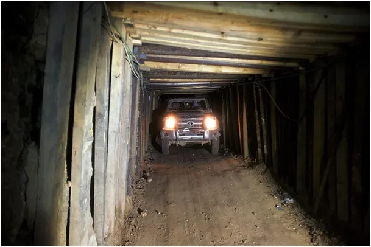
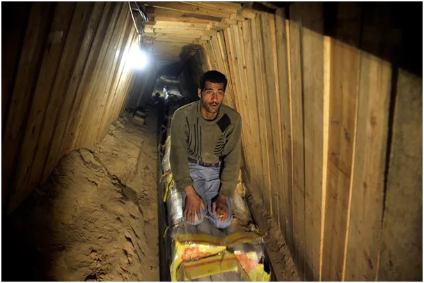
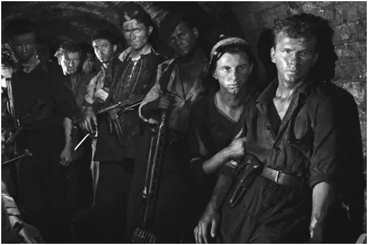

Bomby bąbelkowe to cicha śmierć, jak w kanałach Warszawy w 1944 roku.
Dziś wojna to już zabijanie ludzi robotami, z daleka. Operator drona jest setki lub tysiące kilometrów od swej ofiary. Widzi go w często podczerwieni i nie zobaczy nigdy twarzy człowieka, który gdy płonie wyskakując z podpalonego pojazdu robi się tylko „jaśniejszy” i biega jak opętany w kółko.
Ten robot z filmu to taki karaluch, który wszędzie wejdzie i przeszuka ruiny i tunele. Gdy już znajdzie ofiarę, operator innym robotem zaniesie tam nowy rodzaj broni, bombę bąbelkową. To taki granat, który nie eksploduje tylko produkuje bardzo dużo piany, takiej jak do montażu okien. Piana szczelnie wypełnia schron, czy tunel, zastyga i na zawsze zakrywa swoje uduszone ofiary.

Właśnie trwają testy tej broni w zbombardowanym mieście. Nie wiemy. ile ofiar tej broni już jest, wiadomo tylko, że kilku żołnierzy używających takich granatów straciło wzrok, bo nie byli dobrze wyszkoleni. Zawsze z nowinkami są na początku „nieprzewidziane trudności”, ale się szybko wprawią "nasi chłopcy i dziewczyny", taki "job".

Kanały w Gazie nam tak odległe są zdumiewająco podobne do kanałów Warszawy z 1944 roku. Polscy żołnierze też byli nazywani „bandytami”, bo byli u siebie.

„Myśmy wszystko zapomnieli; mego dziadka piłą rżnęli… Myśmy wszystko zapomnieli.” Wesele, Stanisław Wyspiański, 1901 r.
Film o robocie, karaluchu szpiegowskim https://www.youtube.com/watch?v=yohWIfy_zNk
Paweł Klimczewski